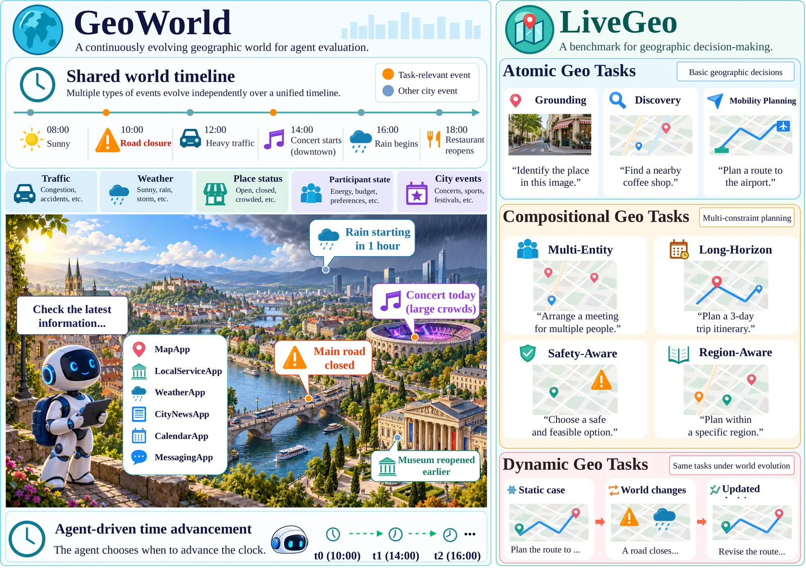
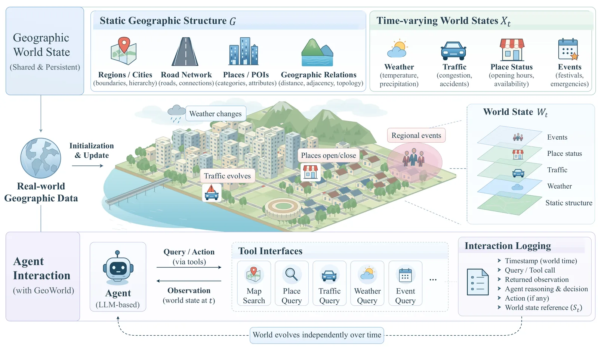
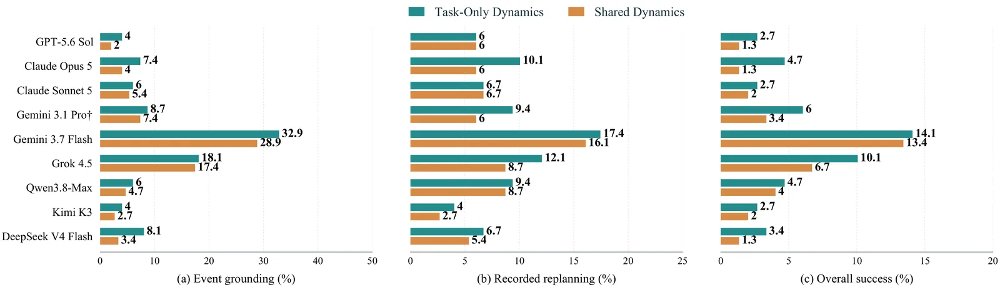
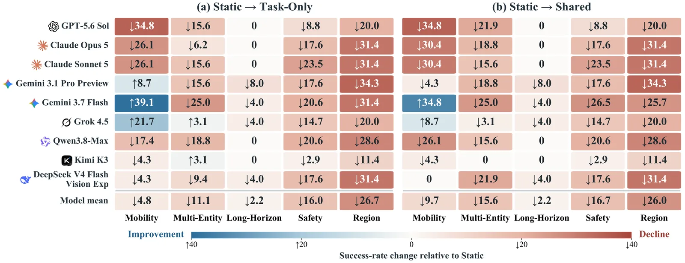

A Falácia do Mapa Estático
A inteligência geográfica, definida como a capacidade de compreender, raciocinar e agir sobre informações do mundo real, avançou significativamente com o surgimento de modelos de linguagem e visão-linguagem. No entanto, a forma como avaliamos esses agentes ainda reflete uma visão ultrapassada da realidade. A maioria dos benchmarks existentes opera sobre estados geográficos fixos. Eles tratam o mundo como uma fotografia estática, onde as estradas, os pontos de interesse e os eventos não mudam durante a execução da tarefa.
Essa abordagem ignora uma característica fundamental do mundo real: a evolução temporal contínua e independente. Em cenários reais, condições de tráfego, disponibilidade de locais e eventos regionais mudam constantemente, muitas vezes sem relação direta com as ações do agente. Avaliações que não incorporam essa dinâmica não conseguem medir a verdadeira confiabilidade de um agente, pois ignoram a necessidade de verificação contínua e replanejamento.
O paper LiveGeo, desenvolvido por pesquisadores da National University of Singapore, Zhejiang University, Beijing University of Posts and Telecommunications e University of Oxford, busca corrigir essa lacuna. Eles introduzem o LiveGeo, um benchmark projetado especificamente para avaliar a tomada de decisão confiável em ambientes geográficos que evoluem continuamente. O objetivo não é apenas ver se o agente chega ao destino, mas se ele mantém a validade de suas decisões à medida que o mundo ao seu redor se transforma.

GeoWorld: Uma Plataforma de Simulação Dinâmica
Para implementar o LiveGeo, os autores criaram o GeoWorld, uma plataforma interativa e controlável de ambiente geográfico. Diferente de simulações tradicionais que reiniciam o estado do mundo a cada teste, o GeoWorld mantém uma estrutura geográfica persistente, baseada em dados reais de redes viárias e locais, acoplada a estados mundiais variáveis no tempo. Esses estados incluem condições de estradas, status de lugares e eventos regionais.
A inovação central do GeoWorld reside na independência da evolução do mundo em relação ao agente. O mundo avança seu próprio processo temporal, independentemente de o agente esteja ativo ou não. O tempo no ambiente avança conforme as ações do agente são executadas, mas as mudanças externas (como uma rua que se fecha ou um evento que começa) ocorrem de forma autônoma. Isso força o agente a lidar com a incerteza e a dinâmica real, em vez de apenas navegar por um labirinto predefinido.
Além disso, o GeoWorld preserva histórias de estados verificáveis. Cada interação do agente é registrada contra o estado do mundo naquele momento específico. Isso permite uma análise granular de falhas: é possível determinar se o agente falhou porque não compreendeu a geografia, porque fez uma suposição incorreta sobre a dinâmica do mundo, ou porque não conseguiu atualizar seu plano quando o ambiente mudou. Essa rastreabilidade é crucial para diagnosticar as limitações atuais dos agentes de linguagem.

O Desafio do Replanejamento Baseado em Evidências
O LiveGeo não testa apenas a capacidade de planejar rotas ou buscar informações. Ele avalia três dimensões críticas: grounding geográfico, viabilidade geográfica e confiabilidade sob evolução do mundo. O 'grounding' refere-se à capacidade do agente de observar e relatar fielmente eventos relevantes. A 'viabilidade' testa se o agente entende as restrições físicas e lógicas do ambiente. Já a 'confiabilidade' mede se o agente consegue manter a validade de suas decisões à medida que o mundo evolui.
Em tarefas dinâmicas, o agente deve adquirir ativamente informações relevantes para a tarefa, verificar se as evidências que sustentam suas decisões anteriores ainda são válidas e revisar seus planos quando necessário. Isso exige um ciclo contínuo de percepção, verificação e ação. Um agente que planeja uma rota com base em dados estáticos pode falhar miseravelmente se uma ponte fechar ou um evento público bloquear o caminho, a menos que ele tenha mecanismos robustos para detectar essa mudança e replanejar.
Os benchmarks anteriores frequentemente focam em aplicações específicas ou fluxos de trabalho, medindo apenas se a tarefa final foi concluída. Isso mascara as causas profundas do fracasso. O LiveGeo, ao isolar essas dimensões, permite entender exatamente onde o agente quebra. Por exemplo, um agente pode ter sucesso em uma tarefa estática, mas falhar completamente em uma dinâmica, não por falta de conhecimento geográfico, mas por incapacidade de integrar novas evidências em tempo real.
Resultados: O Colapso sob Dinâmica
Os experimentos do LiveGeo revelam uma disparidade alarmante entre o desempenho em ambientes estáticos e dinâmicos. Os autores avaliaram nove modelos de linguagem diferentes em tarefas que variam de simples (atômicas) a complexas (composicionais). Em cenários estáticos, alguns modelos apresentam taxas de sucesso moderadas, mas essa performance despenca drasticamente quando a dinâmica do mundo é introduzida.
A Figura 5 do paper ilustra essa queda. Ao comparar o desempenho de tarefas estáticas para cenários de 'Task-Only Dynamics' (onde apenas as tarefas relevantes mudam) e 'Shared Dynamics' (onde o mundo inteiro evolui independentemente), observa-se uma redução significativa nas taxas de sucesso para todos os modelos. Nenhum modelo conseguiu manter a robustez observada no ambiente estático, indicando que o conhecimento pré-treinado não se traduz em confiabilidade dinâmica.
Além disso, a análise detalhada identificou gargalos específicos. Os agentes tiveram dificuldade em 'event grounding', ou seja, em observar e reportar corretamente todos os eventos necessários para a tarefa. Mesmo quando conseguiam observar, muitos falhavam em 'replanning', ou seja, em ajustar suas decisões finais com base nas novas informações. Isso confirma que o problema não é apenas a coleta de dados, mas a integração cognitiva dessas mudanças no plano de ação.

Limitações e Escopo do Estudo
É importante notar que o LiveGeo e o GeoWorld, apesar de serem avanços significativos, têm limitações inerentes. O ambiente, embora baseado em dados reais, é uma simulação. A complexidade de interações humanas, imprevistos não estruturados e a riqueza sensorial de um ambiente físico não são totalmente capturados. Os agentes avaliados operam através de ferramentas abstratas e não têm percepção direta do mundo, dependendo de APIs e consultas.
Além disso, o estudo foca em tarefas geográficas urbanas e regionais. A generalização para outros contextos, como ambientes rurais, submarinos ou espaciais, pode exigir adaptações significativas na plataforma GeoWorld. A evolução do mundo no GeoWorld, embora autônoma, é governada por regras definidas pelos pesquisadores. Embora isso permita controle experimental, pode não capturar a totalidade do caos e da imprevisibilidade do mundo real.
Outra limitação reside na natureza dos modelos avaliados. A maioria dos testes foi realizada com modelos de linguagem de propósito geral, adaptados para tarefas geográficas via prompting ou fine-tuning leve. Não está claro se arquiteturas específicas, projetadas para raciocínio espacial-temporal, superariam os gargalos identificados. O paper abre a questão, mas não fornece a solução definitiva para a robustez dinâmica.
O Caminho para Agentes Confiáveis
A principal contribuição do LiveGeo não é apenas apresentar números de desempenho, mas oferecer uma infraestrutura flexível e extensível para a comunidade. Ao disponibilizar o GeoWorld e o benchmark LiveGeo, os autores da National University of Singapore, Zhejiang University, Beijing University of Posts and Telecommunications e University of Oxford convidam pesquisadores a desenvolverem agentes que vão além do planejamento estático.
O futuro dos agentes geográficos depende da capacidade de sustentar decisões confiáveis em mundos em evolução. Isso requer novos algoritmos de verificação de evidências, mecanismos de atenção temporal e estratégias de replanejamento proativo. O LiveGeo serve como um espelho crítico, mostrando que, embora os LLMs tenham avançado em conhecimento factual, eles ainda estão longe de serem agentes confiáveis em ambientes dinâmicos e incertos.
Para desenvolvedores e cientistas de dados, a mensagem é clara: avaliar agentes em ambientes estáticos é insuficiente. A verdadeira inteligência geográfica envolve a capacidade de navegar na mudança. O LiveGeo estabelece um novo padrão de avaliação, forçando a comunidade a enfrentar a complexidade temporal que define o mundo real.

Conclusão
O paper LiveGeo destaca uma lacuna crítica na avaliação de agentes de IA: a incapacidade de lidar com a evolução contínua do ambiente. Ao introduzir o GeoWorld e o benchmark LiveGeo, os autores demonstram que a performance em tarefas estáticas não garante confiabilidade em cenários dinâmicos. Os agentes lutam para adquirir novas evidências, verificar a validade de suas suposições e replanejar adequadamente.
Este estudo não é uma revolução, mas um diagnóstico necessário. Ele expõe as limitações atuais dos LLMs e fornece as ferramentas para que a comunidade possa trabalhar em soluções mais robustas. Para quem constrói sistemas de IA para o mundo real, ignorar a dinâmica temporal é um risco inaceitável. O LiveGeo oferece o primeiro passo concreto para medir e melhorar essa capacidade essencial.
O que fica
- O LiveGeo avalia agentes em ambientes onde o estado geográfico evolui independentemente da ação do agente, exigindo verificação contínua de evidências.
- Modelos de ponta falham em tarefas estáticas e têm desempenho ainda pior em cenários dinâmicos, indicando que conhecimento estático não garante robustez.
- O principal gargalo identificado é a incapacidade dos agentes de adquirir novas evidências relevantes e replanejar quando suposições anteriores se tornam inválidas.
- A plataforma GeoWorld permite rastrear histórias de estados verificáveis, isolando falhas de compreensão geográfica de falhas de execução.
Paper original: LiveGeo: Benchmarking Geographic Agents in Continuously Evolving Worlds
Comentários
Nenhum comentário ainda. Seja o primeiro.